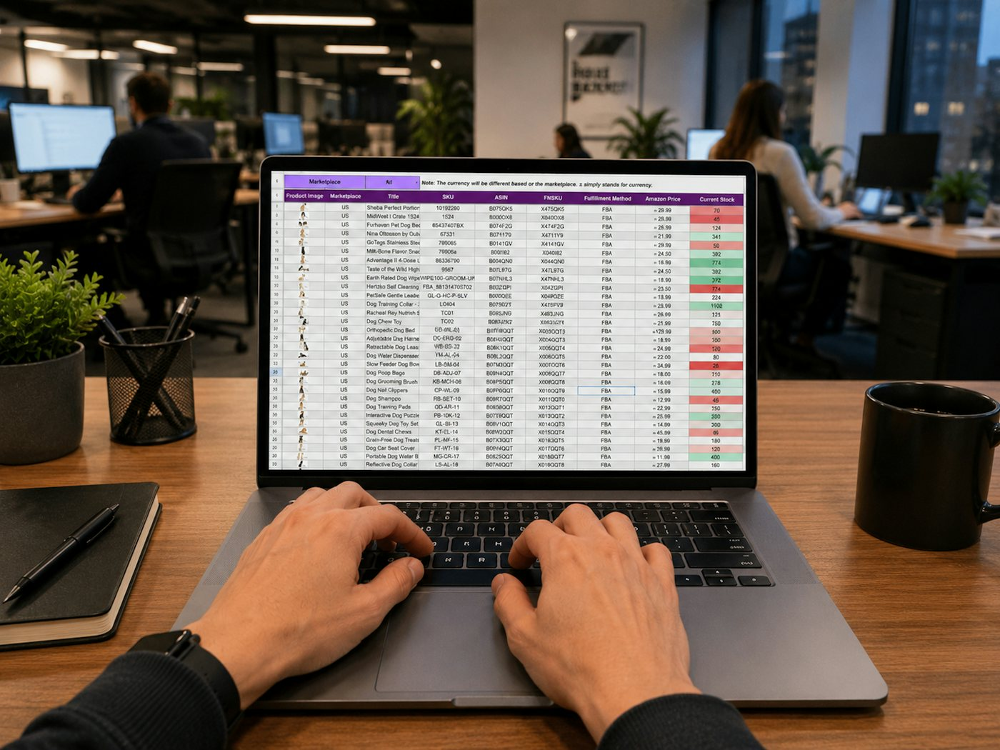

Research
Define questions, find credible sources, conduct appropriate primary research, and synthesize evidence.
Quill · Skills & Experience
Research, spreadsheet analysis and modeling, PowerPoint presentations, report writing, project management, and collaboration.

Practical skills
Define questions, find credible sources, conduct appropriate primary research, and synthesize evidence.
Organize data, build models, test assumptions, compare scenarios, and interpret results.
Develop a clear narrative, build useful charts, and present evidence and recommendations.
Write research summaries, analytical reports, and concise executive material.
Plan tasks, manage deadlines, communicate progress, and adapt when the work changes.
Review teammates’ work, discuss disagreement constructively, and integrate contributions.
How the team works
Quill teams meet weekly to discuss findings, review progress, test ideas, and coordinate next steps. Between meetings, members complete assigned research, analysis, writing, or presentation work.
In review, the team challenges assumptions, gives feedback, checks the evidence, and integrates separate pieces into the final work. Each member should be able to explain the reasoning behind their contribution.
Liberal arts in practice
Hamilton’s liberal arts education gives students practice in close reading, quantitative and qualitative analysis, discussion, writing, and independent judgment. Client work asks students to use those habits together rather than in isolation.
The goal is not one prescribed way of thinking. It is the ability to investigate a question from more than one angle, explain the evidence, and revise an interpretation when better evidence appears.
AI and the changing profession
AI can support appropriate research, analysis, drafting, and exploration, but the team remains responsible for every final deliverable. Members must check sources, calculations, assumptions, interpretations, and unsupported claims.
Human judgment remains essential: framing the right question, recognizing what is missing, challenging a plausible answer, collaborating with others, and explaining a recommendation. Client information must not be entered into unapproved tools.
“AI models are great at a linear approach to problem-solving but not at making discontinuous leaps.”
Bob Sternfels, McKinsey Global Managing Partner, in a Harvard Business Review interview, January–February 2026. The quotation provides context and does not imply McKinsey endorses HCG.